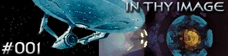

|

Escrito
por Harold Livingston
De muitas maneiras,
esse episódio não passa de "Jornada
nas Estrelas: O Filme", só que sem Spock. A boa e
velha Enterprise, completamente reformada, sai da doca espacial
para combater uma misteriosa nuvem de energia que está destruindo
naves e tudo mais em seu caminho para chegar à Terra.
O agora almirante Kirk, rebaixado para capitão apenas nessa missão,
junta-se ao Dr. McCoy, Scotty, Sulu, Uhura, Chekov e a três novos
oficiais da Enterprise, o primeiro-oficial Willard Decker, o
oficial de ciência Vulcano, tenente Xon e a navegadora Deltana
Ilia.
Ao final da missão descobre-se no centro da nuvem uma antiga
sonda enviada da Terra no século 20, Voyager-6, havia evoluído
para uma forma de vida e voltava à Terra em busca de seu criador.
Ilia e Decker não são considerados 'desaparecidos' no final da
história e Spock não volta à ativa. Começa a Fase II de
Jornada nas Estrelas.
Próximo
episódio
|